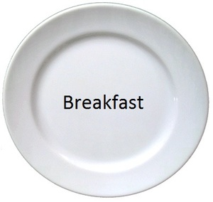
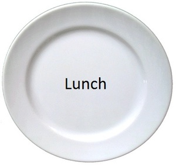

 
The problem with diets is that diets don't work. The overwhelming
majority of dieters gain back all of the weight they lose within
a few years. Over human history, rapid weight loss has generally been due to
scarcity of food, and the human body helpfully
slows your metabolism
down to keep you from wasting away. The more you diet, the
more your metabolism slows, and the harder it is to not gain weight.
The only diet
that can work is not a diet, but a lifestyle
change
. The word diet
suggests a temporary state of being,
something you do for a little while until you hit your target weight.
But what really determines your long-term weight is how you live
in the years and years after the diet. And since dieting
is counterproductive, we should skip that part and go directly
to living our life the way we should.
Slow weight loss over a long time = success! The key to
prevent your body from sabotaging your weight loss is by
losing weight slowly. When you lose weight slowly, your
body doesn't think it's in danger and won't slow your metabolism much.
That's why lifestyle changes
are so much more effective than diets
.
Slow weight loss over long periods of time can really add up: If you
lose half a pound a week for a year, that's 26 pounds!
If we're going to do something for years and years, it better be damn easy. There's no way a person can follow a diet for a long time if it's a pain in the ass. The fact is that most people are not willing to spend the effort to eat five servings of vegetables a day or avoid all carbs or always order salads at restaurants. And spending even five minutes after every meal logging what you ate can drive a person batty in no time.
OK, here's the One Plate Diet
(though it's not really a diet
but a lifestyle change):
For every meal of the day, pick a plate that you will use
every day, i.e., a breakfast
plate, a lunch
plate, and
a dinner
plate. Picture how much food you usually eat at
that meal, then choose a plate that's slightly smaller.
At each meal, you can fill your plate once for free
. If
you want more, you can fill your plate again, but before you
do, you must write down that you did in a monthly log. This
log can be as simple as a piece of paper; just write down
the date and meal and track how many extra plates you ate.
Buy a good digital scale and weigh yourself every day at the same time wearing the same amount of clothes. At the end of the week, pick the lowest weight from the week and that is your official weight for that week.
Adjust your plate sizes until you are losing about half a pound a week. If you are not losing weight, pick a slightly smaller plate size for some meals until you are.
People can't always choose what they eat. It can take time and effort to eat healthy. Or you may be part of a family and not be in charge of what gets served. Ultimately, a lifestyle change is pointless if it's too much bother to follow, and only you can determine what you are willing to eat.
Eat healthy if you can. I'm not saying you shouldn't try to eat healthy. Unfortunately, there doesn't always seem to be wide agreement about what this means. It's probably pretty safe to eat lots of fruits and vegetables and to avoid eating lots of added sugar or highly-refined carbs.
Exercise has tons and tons of health benefits, and you should do it. Unfortunately, it hasn't consistently been shown to be helpful in losing weight.
There are two key principles that form the backbone of this diet:
Measurement — Obviously, you need to weigh yourself to know if you're losing weight. But you also need to measure how much food you're eating, to know if you're eating less.
Sustainability/Simplicity — A diet isn't sustainable unless it's incredibly simple.
platerepresents is the simplest possible way to measure how much you're eating. Having a simple measuring device prevents you from continuing to eat just because you have no idea how much you've already eaten. While what you're eating matters too, recording this is work and it can affect weight loss in unpredictable ways.
Why It Doesn't Matter What You Eat. The reason it doesn't matter is because we use feedback. If you are not losing weight, just eat less. The important thing is to be consistent in the types of food you eat. If you eat all salad one week and find you are losing weight, then eating all ice cream the next week may not produce the same results.
I can eat as many plates as I want as long as I log it!?
Look, the assumption here is that you want to lose weight more than
you enjoy overeating. If whenever something slightly tasty is
placed in front of you, you think, I'm eating this; damn the
consequences!
, then this diet (and every other diet) will
not work for you.
The only punishment
for eating an extra plate is writing
it down!? When you break the rules of a diet, the only
one who can punish you is yourself. If the punishment
is too harsh, you'll stop following the diet.
Ultimately, we rely on your desire to succeed to supply
all the negative or positive feedback that is required.
If you stick to one plate, you'll feel good about yourself.
If you eat an extra plate for no good reason, you'll
be disappointed and that will be punishment enough.
Creating a good habit. The point of the logging is to create a habit: Whenever you get another plate of food, you think about whether you really want it. It's perfectly fine to eat more sometimes (you're starving; impressing your boss; etc.), but the danger is eating more when you don't really need or want to. Writing something down forces you to pause and think about it, but it's not so painful as to make it hard to stick to the diet.
Is this really a diet? — No, it's a lifestyle change, but
calling it The One Plate Lifestyle Change
sounds a lot worse.
What about snacks? — You can eat snacks if you're hungry. Just pick an appropriately sized snack plate, and be consistent about how many snacks you eat each day.
What about soup? You can't put soup on a plate! — Put the soup in a bowl and put the bowl on the plate.
What if I don't have my plates with me? — Find a bigger plate and use ketchup to draw the outline of your plate on top. Or just do this in your head.
What if my meal comes in multiple courses? — Remember in your head what fraction of a plate you've already eaten.
What if I pile on food as high as I can? — Then the diet won't work unless you use really small plates.
Did you forget the step about reviewing the monthly logs? — No, not really. It can be informative to look at the monthly logs to try to spot trends, e.g., particular times you tend to overeat. But the real reason for logging is to make it a habit to think every time you get another plate.
Is there an app I can use for the monthly logs? — Any note-taking app should work, like Notes for iOS. Or you can print out monthly calendar pages, or just use a blank piece of paper.
What if I'm hungry all the time? — It may be the case that when you make your plates small enough to lose weight, you are hungry all the time. If so, this diet probably won't work for you unless you have an exceptional amount of self-discipline. However, for most people, this shouldn't be the case, because the human body is amazing. The human body can comfortably adapt to a wide range of situations, and gradual weight loss should generally not cause a great deal of suffering.
Do I really need a breakfast
plate? — I didn't use one. If
you always eat the same amount for breakfast, there's no need.
I have different plates for breakfast, lunch, and dinner. Why
isn't it called The Three Plate Diet
? — I used the same
plate for lunch and dinner and no plate for breakfast, so it really
was only one plate for me. More importantly, the one
refers
to one plate of food per meal.
Why do I need to weigh myself every day? — Gradual weight loss is crucial, and this can be hard to measure since a person's weight varies throughout the day and between days. Taking the minimum weight over seven days should result in a more accurate weight measurement. Taking the average would be better, but people hate math.
Are you a nutrition expert? — No, I'm just a guy who wanted to lose some weight and who likes to read a lot.
Are you a shill for Big Plate
? — There is no
such thing as Big Plate
. And this site has no ads and
never will.